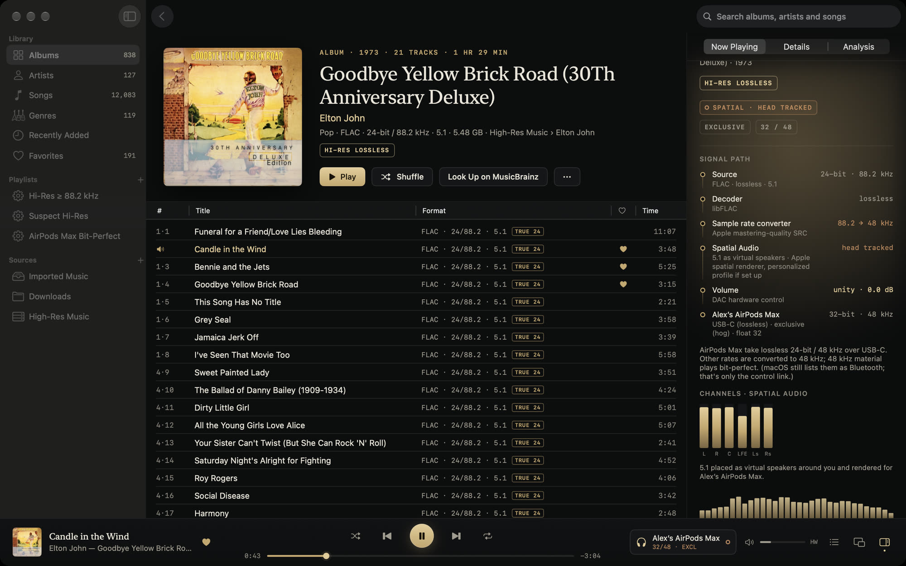

Surround and hi-res music, on your Mac.
The free, open-source Mac player for surround and hi-res music collections. Extracted SACD 5.1 tracks, DTS CDs, DTS-HD MA, TrueHD and Atmos files share one library, with head-tracked Spatial Audio on AirPods. A signal path shows each step from file to output.
Channel-for-channel output and receiver bitstream are experimental, untested on real receivers/multichannel DACs; reports wanted. SACD ISO playback is coming in the next release.
macOS 14.4+ · Apple silicon & Intel · signed and notarized · GPL-3.0
Or brew install --cask szeremeta1/tap/vespertine
Privacy: nothing collected · How it's made

Extracted SACD 5.1 tracks as head-tracked Spatial Audio on AirPods Max. The signal path names the rendering and shows a meter for each channel.
See it in 36 seconds.
Turn the sound on. Everything in it is the real app, recorded on the developer's own library.
Built for your surround collection.
I'm Alex, a student who built this for my SACD rips and FiiO K11. I wanted surround and stereo music in one library, and a way to see what the player did to the signal.
Surround in one library
Extracted SACD 5.1, DTS CDs, DTS-HD MA and TrueHD play as head-tracked Spatial Audio on AirPods. DD+ Atmos uses macOS's object renderer. Multichannel DAC output is experimental, untested on real receivers/multichannel DACs; reports wanted.
Open source you can audit
Free under GPL-3.0. You can read, build and change the player, including its output conditions and tests. No account, subscription or telemetry.
A signal path you can check
The signal path shows rates, word lengths, gain and channel processing. The bit-perfect conditions are in the source, with automated tests and a hardware verification guide.
Checks hi-res files
Analysis flags padded bit depth and possible upsampling or lossy origin. Spectral verdicts are estimates, with evidence and limits. VeraVox and Audirvana AudioScan offer file analysis too.
Your 5.1 discs, in the same library.
DTS CDs decode to 5.1. Extracted SACD tracks, TrueHD and DTS-HD MA render as head-tracked Spatial Audio on AirPods or fold down on a stereo DAC. Channel-for-channel output is experimental, untested on real receivers/multichannel DACs; reports wanted. Dolby Digital Plus with Atmos uses macOS's object renderer; TrueHD Atmos and DTS:X play their channel bed. SACD ISO playback is coming in the next release.
- Stereo and surround versions of an album are listed once; Vespertine plays whichever suits the output.
- Dolby Digital, DD+ and DTS-CD receiver bitstream is experimental, untested on real receivers/multichannel DACs; reports wanted. Carrier tests use FFmpeg's S/PDIF reader. TrueHD and DTS-HD MA passthrough is unsupported.
- Export for Spatial Audio as binaural stereo or multichannel ALAC.

Every track at its native rate and depth.
Vespertine switches the device to each file's rate and resamples when the DAC cannot run it. PCM playback has been tested up to 384 kHz on a FiiO K11. Unprocessed 32-bit PCM needs integer mode to preserve every bit.
- Exclusive (hog) mode keeps other apps off the device. Shared or exclusive, the volume keys and the Digital Crown still work.
- Integer mode sends 32-bit integers straight to DACs that take them.
- Gapless, including CUE-sheet albums split from one file.
- Hands your DAC back at the rate and depth it had before, when Vespertine quits.

Find out which “hi-res” files aren't.
Every file can be analyzed for its real bit depth, its real bandwidth and the fingerprints of lossy encoders and resamplers. Verdicts come with their evidence and name what else could explain it, and a Suspect Hi-Res playlist collects them. Only zero padding is exact: the spectral verdicts are flagged as questions, because some high-bitrate lossy files pass as genuine and steep mastering filters, FM sources and tape or vinyl transfers can look suspicious.
- 16-bit padded into 24-bit containers
- Likely upsampled CD-quality masters sold as 96 or 192 kHz
- Likely lossy origin: MP3 or AAC transcoded to FLAC
- Likely synthetic high frequencies from SBR or “AI enhancement”
The file in this screenshot is a deliberate fake: the trailer's own music, encoded to MP3 and upsampled to 24/192 under a made-up band name.

Lossless on AirPods Max, and it says so.
Connected with the USB-C cable, AirPods Max are recognized as a 24-bit / 48 kHz lossless device: 48 kHz music plays bit-perfect and everything else is converted with Apple's mastering-quality resampler, in plain view. Over Bluetooth, Vespertine tells you the link is AAC.

Browse like Apple Music. Manage like a librarian.
- Albums, artists, songs and genres, each with filters you can combine (format, 24-bit, 88.2 kHz and up, multichannel, genre, year, sample rate, channels, analysis) and Shuffle for any of them.
- Search across everything, ignoring case and accents.
- Smart playlists in the units you think in: 24-bit, 88.2 kHz.
- Favorites: a heart on any song and a Favorites page, kept in the library and never written to your files.
- Tag editor with backups and one-step revert, plus MusicBrainz enrichment that shows its confidence before writing anything.
- Network shares over SMB, NFS or WebDAV, with caching, Keep Offline and playback built for slow servers.
- Find Music searches every drive for your real music and leaves the clutter behind.

Surround, lossless and lossy files.
| FLAC, ALAC, WAV, AIFF | Native rate and depth up to 32-bit and the rate your DAC runs (tested to 384 kHz), CUE images .flac .m4a .wav .aiff .cue |
|---|---|
| DSD64 – DSD512 | DSD64–512 file decoding; DoP depends on the DAC and carrier rate, otherwise PCM. DoP carrier rates above 384 kHz are untested on hardware. SACD ISO playback (stereo and 5.1, DST) is coming in the next release .dsf .dff |
| Dolby Atmos | Dolby Digital Plus with Atmos, rendered by macOS .ec3 .m4a .mp4 |
| Dolby TrueHD, DTS-HD Master Audio | Lossless, can be bit-perfect; DTS:X and TrueHD Atmos play their bed .thd .dts .dtshd .mka |
| Dolby Digital (Plus), DTS | Decoded; Dolby receiver bitstream is experimental, untested on real receivers/multichannel DACs; reports wanted. Raw DTS decodes; DTS-CD bitstream is a separate path .ac3 .ec3 .dts |
| DTS CDs and DTS-WAV | Recognized and decoded to 5.1, including CUE-split albums .wav .flac |
| APE, WavPack, TTA | Lossless .ape .wv .tta |
| Opus, Vorbis, Musepack, MP3, AAC | Decoded and marked lossy .opus .ogg .mpc .mp3 .m4a |
How it stacks up.
Several Mac players offer bit-perfect playback. This compares documented features; ? means unverified, not unsupported. SACD ISO playback is coming in the next release. Vespertine has no convolution, audio effect plugins or streaming services.
| Feature | Vespertine | Apple Music (Mac) | Audirvana Studio / Origin | Roon | VeraVox | Swinsian | Colibri | Cog | foobar2000 for Mac |
|---|---|---|---|---|---|---|---|---|---|
| Source code | GPL-3.0 | Closed | Closed | Closed | Closed | ? | ? | Open | ? |
| FLAC / DSD files | Yes / Yes | No / No | Yes / Yes | Yes / Yes | Yes / Yes | ? / ? | Yes / Yes | Yes / Yes | Yes / ? |
| Automatic DAC rate switching | Yes | No | Yes | Yes | Yes | ? | Yes | ? | ? |
| Exclusive (hog) mode | Yes | No | Yes | Yes | Yes | ? | Yes | ? | ? |
| 16/24-bit PCM without sample changes | Conditions + tests | macOS 27: third-party tests¹ | ? | ? | In-app loopback test | ? | ? | ? | ? |
| Local surround files | Yes² | ? | Yes | Yes | Yes | ? | ? | Yes | ? |
| Apple Spatial Audio for local surround | Yes | ? | ? | ? | ? | ? | ? | Yes | ? |
| Hi-res file analysis | Yes | ? | AudioScan | ? | Yes | ? | ? | ? | ? |
| SACD ISO | Next release | No | ? | ? | Yes | ? | No | ? | ? |
| Convolution / audio effect plugins | No / No | ? / ? | Yes / ? | Yes / ? | ? / ? | ? / ? | ? / ? | ? / ? | ? / ? |
| Streaming services | No | Apple Music | Studio: yes; Origin: no | Yes | ? | ? | ? | ? | ? |
¹ Apple Music on macOS 27 was bit-exact at 16/24-bit in third-party loopback tests reported on ASR, at 100% volume. This is not a Vespertine measurement; the original report could not be independently rechecked for this update. There is still no automatic rate switching, hog mode, FLAC or DSD on Mac.
² Multichannel DAC output and receiver bitstream are experimental, untested on real receivers/multichannel DACs; reports wanted.
Sources and scope. Corrections welcome: open an issue.
Questions, answered.
Is it really free?
Yes. Vespertine is free and open source under the GPL-3.0. There's no account, no subscription, no ads and no telemetry (privacy). It only goes online to check for updates, and to reach MusicBrainz, the Cover Art Archive or ListenBrainz when you ask it to.
What do I need?
macOS 14.4+ on Apple silicon or Intel. Intel hardware is untested; the Intel build has run under Rosetta. Playback has been checked on a FiiO K11, AirPods Max and MacBook Pro speakers. Receiver bitstream and multichannel DAC output are experimental, untested on real receivers/multichannel DACs; reports wanted.
Does it stream from Qobuz, TIDAL or Apple Music?
No. Vespertine plays music you own, on your Mac, on external drives or on a network share. DRM-protected Apple Music subscription downloads cannot be played.
How do I know it's actually bit-perfect?
The signal path reads back what Core Audio actually did: the device's nominal rate, its physical format and who holds it. The decoders have automated tests (TrueHD against its source, DTS against FFmpeg's own decoder), and vespertine-probe lets you check your own hardware. How to verify it yourself →
Will it change my files?
Only when you edit tags, and then each file is backed up first and can be reverted in one step. Folders are referenced in place; importing makes APFS clones that take no extra space.
Which hardware has it been tested on?
Playback has been tested on a FiiO K11 at rates up to 384 kHz, with DoP and integer mode; AirPods Max over USB-C and Bluetooth; and MacBook Pro speakers. Intel hardware is untested. Receiver bitstream and multichannel DAC output are experimental, untested on real receivers/multichannel DACs; reports wanted.
How it's made
Claude Code and Codex wrote most of the code. I decided how the app should behave, wrote acceptance tests, and measured playback on my FiiO K11, AirPods Max and MacBook Pro speakers. The source and tests are public.
Does it run on older Macs?
The current beta requires macOS 14.4+. Earlier releases before 0.10.0 required macOS 26. Intel hardware is untested.
Play your surround collection on your Mac.
Free · open source · macOS 14.4 or later